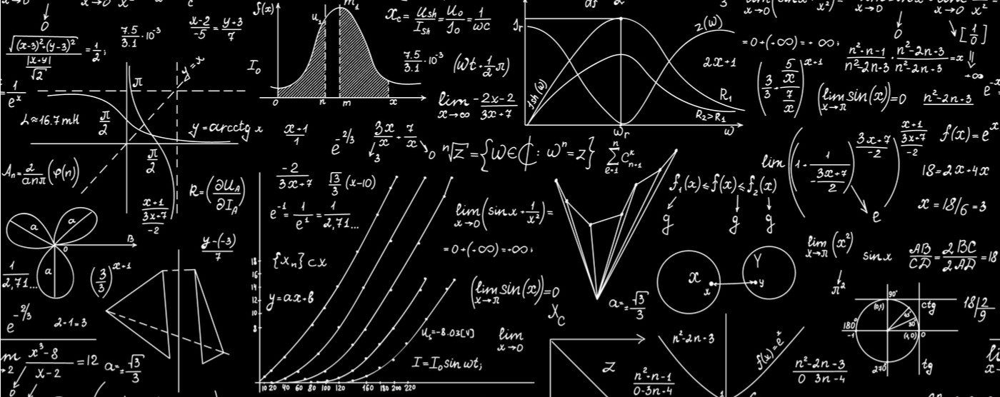

Dicas de como aprender Funções e Gráficos
1. Básicos: Entenda o domínio, contradomínio e imagem de funções.
2. Prática: Resolva muitos exercícios de funções e gráficos.
3. Tutoriais: Veja vídeos explicativos online.
4. Visuais: Use gráficos e diagramas interativos.
Dicas de como aprender Estatística e Probabilidade
1. Básicos: Estude média, mediana, moda e variância.
2. Prática: Faça muitos exercícios.
3. Tutoriais: Veja vídeos explicativos online.
4. Visuais: Use gráficos e diagramas interativos.